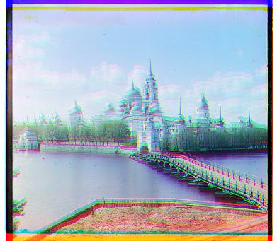

Overview
The objective of this project is to colorize digitized Prokudin-Gorskii glass plate images. Given an input of a glass plate image,
we extract the three color channel images (red, green, and blue) and built an algorithm to stack and align them using image processing
techniques and produce a single color image as our result.
My Approach
The first step of this project is to divide the input image into three distinct sections representing each color channel.
Then, the overall goal is to separately align the green and red images onto to the blue image by translating it using (x, y) vectors.
One problem that I ran into was misalignment caused by transforming the images and their borders.
To fix this, all images were cropped by 10% its size on each edge pre-alignment in order to reduce noise from the borders affecting the results.
The naive implementation for low resolution images involved performing an exhaustive search by calculating the SSD (Sum of Squared Differences) of each green and red image with the blue in a window of [-15, 15] pixels.
Finding the optimal alignment is then straightforward as it is simply the transformation that achieves the lowest SSD value.
This method was also perfomed using NCC (Normalized Cross-Correlation), which achieved very similar results for low-res images.
For NCC, we aimed to maximize the absolute value of the correlation to find the optimal alignment.
With higher resolution images, our naive implementation would run very slowly. Thus, we utilized an image pyramid to align larger images recursively.
My implementation creates four levels of images by halving the resolution each time (for the high resolution photos), or until the smallest image's resolution/height reached 200 pixels.
I stored these images into a list, and then aligned the images starting with the smallest one. For the smallest, I ran SSD with a tolerance of [-15, 15] pixels for displacement.
Going down each level of the pyramid, I offset the images by the previous level's displacement vector multiplied by two to account for the scale factor.
Then, I ran SSD on the images with a shift range of only [-3, 3] and added any new transformations to the offset variables.
The result is the optimally aligned photograph.
Results
Here are the results:
Low-Res Plate Images
Cathedral
Green: [5, 2] Red: [12, 3]

Monastery
Green: [-3, 2] Red: [3, 2]
Tolbolsk
Green: [3, 3] Red: [6, 3]
High-Res Plate Images
Church
Green: [25, 4] Red: [58, -4]
Harvesters
Green: [60, 17] Red: [124, 14]
Icon
Green: [41, 17] Red: [90, 23]
Lady
Green: [52, 9] Red: [112, 12]
Melons
Green: [82, 10] Red: [178, 13]
Onion Church
Green: [52, 26] Red: [108, 36]
Sculpture
Green: [33, -11] Red: [140, -27]
Self Portrait
Green: [79, 29] Red: [176, 37]
Three Generations
Green: [53, 14] Red: [112, 11]
Train
Green: [42, 6] Red: [87, 32]
Emir
Green: [49, 24] Red: [100, -205]
My algorithm failed to align the Emir image due to the disrepancy in pixel values between the three channels. Some channels are much higher in contrast than the others, especially due to the color of his coat. This leads to misalignment because the algorithm assumes that the pixels are similar in value when comparing.
Extra Plate Images
Veranda
Green: [10, 40] Red: [54, 52]
Lindozero
Green: [13, -1]Red: [82, -2]
Waterfall
Green: [14, -2] Red: [80, -2]
Sunset
Green: [0, 9] Red: [0, 163]
Cropped the image by 10% on eatch edge and automatically rescaled the image intensity (contrast) of the images so the darkest pixel is 0 and the lightest pixel is 1.
Harvest Original (left) Contrast (right)
Before: Darkest Pixel: 0.00392156862745098 Lightest Pixel: 0.9872739757381552
After: Darkest Pixel: 0.0 Lightest Pixel: 1.0
Original Onion Church (left) Contrast (right)
Before: Darkest Pixel: 0.00392156862745098 Lightest Pixel: 0.9718165865568017
After: Darkest Pixel: 0.0 Lightest Pixel: 1.0